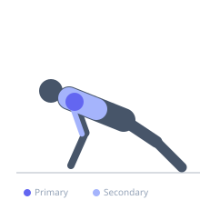
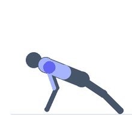

Exercise guide / Pike Push-Up
Pike Push-Up
The pike push-up is a bodyweight pressing exercise performed in a pike (inverted V) body position, with hips raised and the torso angled toward vertical. This positions the shoulder joint in a more overhead alignment, making the anterior and lateral deltoids the primary movers rather than the pectorals. It serves as an accessible progression toward handstand push-ups.
Primary muscles
deltoid anterior
deltoid lateral
Secondary muscles
triceps lateral head
triceps medial head
trapezius upper
pectoralis major clavicular
Stabilizers
supraspinatus
infraspinatus
transverse abdominis
Equipment
No Equipment (Bodyweight)


Starting position
- Start in a push-up position, then walk the hands back toward the feet while raising the hips until the body forms an inverted V shape. Heels may be slightly lifted. Arms and back should be nearly straight.
Setup
- No equipment required. The higher the hip position, the more vertical the torso and the greater the shoulder demand.
Steps
- Step 1: Begin in a push-up position, then walk hands toward feet and raise the hips to form an inverted V.
- Step 2: Brace core. Ensure hands are shoulder-width apart with fingers spread.
- Step 3: Inhale and bend the elbows to lower the top of the head toward the floor between the hands.
- Step 4: When the head nearly touches the floor or reaches the bottom of your range, exhale and press back to the starting inverted-V position.
Coaching cues
- Push the floor away as you think about pressing your hips toward the ceiling
- Keep shoulders packed away from the ears throughout the movement
Breathing
- Inhale on the descent; exhale as you press back up.
Range of motion
- Lower until the top of the head is 1–2 cm from the floor, then press back to the pike position.
Tempo
- 3-0-1-0
Common mistakes
- Letting the hips drop during the movement, which shifts load to the chest
- Flaring the elbows wide rather than allowing them to track naturally
Safety
- Develop adequate shoulder strength before progressing to fully vertical handstand push-ups
- If you feel neck pain when the head approaches the floor, reduce range of motion
Training
- strength: 3–8 reps
- hypertrophy: 8–15 reps
- endurance: 12–25 reps
- strength: 3–5 sets
- hypertrophy: 3–4 sets
- endurance: 2–3 sets
- Rest: {'strength': 120, 'hypertrophy': 75, 'endurance': 45}